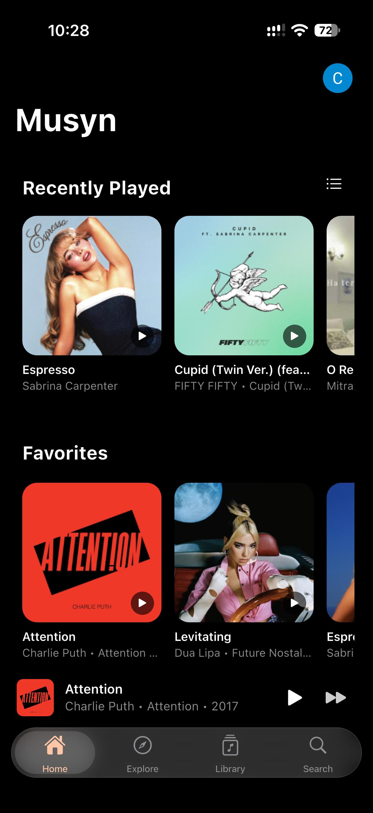
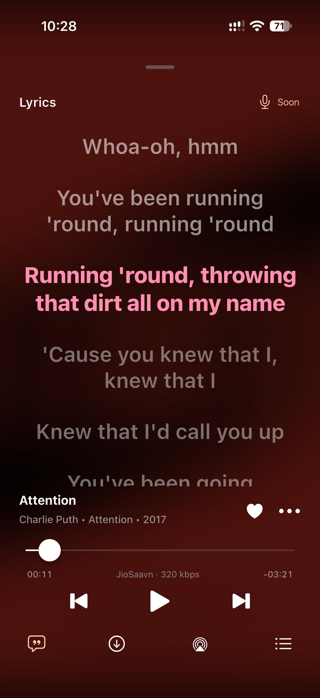
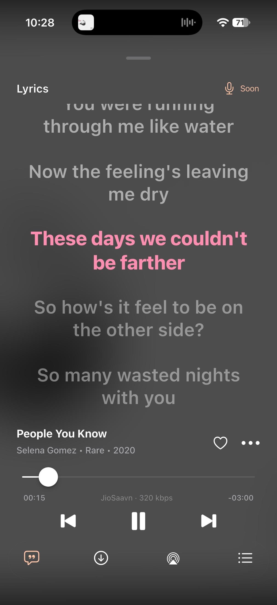
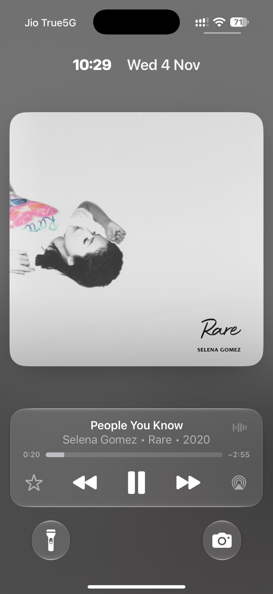
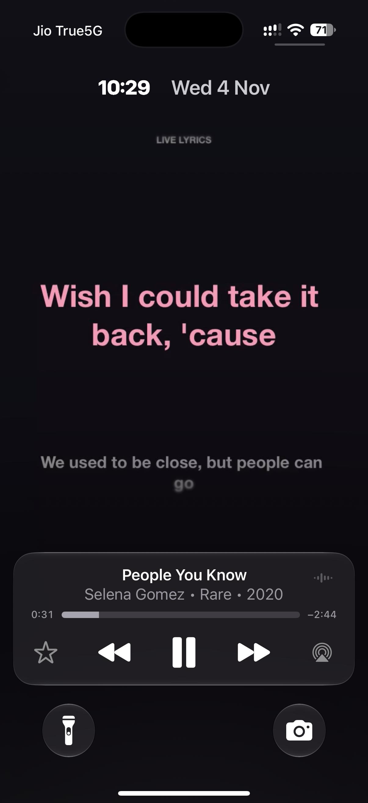

Musyn
Music, in your rhythm.
A high-fidelity iPhone music player uniting YouTube Music and JioSaavn into one serene, ad-free listening experience. Featuring dynamic time-synced karaoke lyrics, Dynamic Island playback indicators, offline audio caching, and zero surveillance telemetry.
Interface Gallery
Captured directly from iPhone. High-contrast typography, live lyrics synchronization, and distraction-free audio controls.





Engineered for Listening Freedom
Software designed to get out of the way and keep the music front and center.
Dual-Source Audio Streaming
Search and stream seamlessly across YouTube Music and JioSaavn (up to 320 kbps AAC) from one unified search bar without requiring account credentials.
Deterministic Offline Storage
Download tracks and entire albums directly to your iPhone filesystem for uninterrupted playback when traveling or offline.
Zero Telemetry & Algorithm Hijacking
No recommendation engines forcing promoted tracks into your queue. No behavioral profiling, no tracking pixels, and zero advertisements.
CarPlay & Home Screen Widgets
Includes CarPlay support (when signed with compatible entitlements) and native iOS Home Screen widgets for immediate resume.
Installation & Sideloading
Distributed as an unsigned IPA. Install via your preferred iOS sideloading utility in seconds.
Add Shared Source or Download IPA
Tap your installer button above to add source.json, or download Musyn.ipa directly from the official releases repository.
Sign with Your Apple Certificate
Sign using your free 7-day Apple ID certificate, a personal developer certificate, or run without signing limits inside LiveContainer.
Trust Certificate & Listen
Open iOS Settings → General → VPN & Device Management to trust your developer certificate if prompted, then launch Musyn.